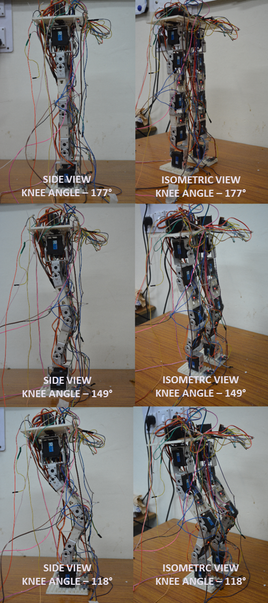
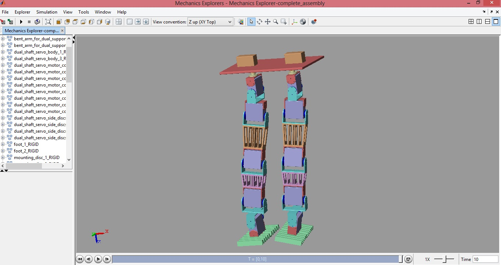
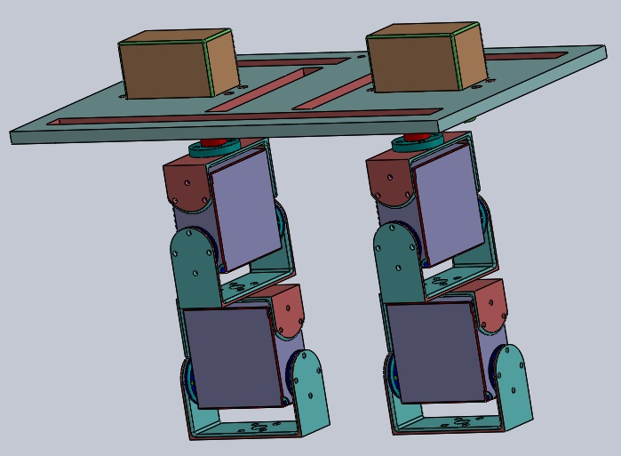
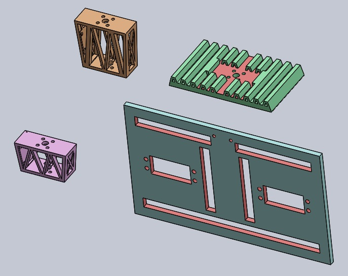
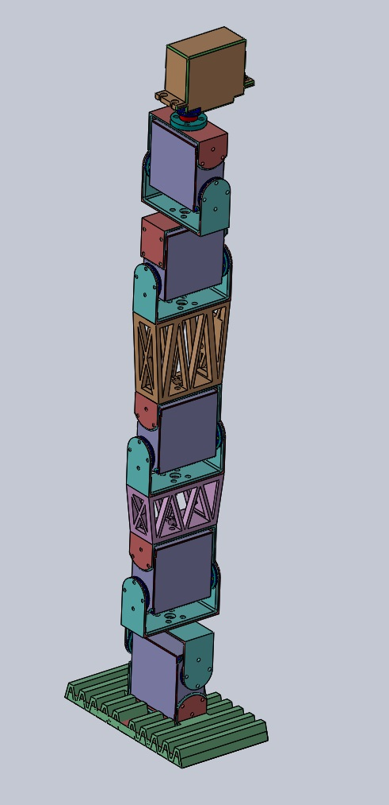

LOWER BODY WALKING BIPED ROBOT
JULY 2016 - MAY 2017 | ZINE LAB | MNIT JAIPUR
PROJECT PARTNER - RAHUL RAVICHANDRAN
OBJECTIVE
Building a 12-DOF lower body walking biped robot with the ability of teleoperation as a human gait follower
RESEARCH ASPECTS
• Cubic Spline interpolation technique was used to derive Foot, hip and knee trajectory
• ZMP criterion was used to achieve stability in the walk
• IMU sensors mounted on each individual link of the biped are used to find the complete orientation of the robot links
• The robot is programmed on the Python platform using a Raspberry Pi 2
• The other circuitry includes PWM generator-PCA9685, 12-bit ADC -ADS1115 and a range of sensors like MPU-6050 and MPU-9150


METHODOLOGY
This biped robot is a flat foot biped designed for bent knee walking analogous to the Honda made ASIMO. The primary objective is to create the model that resembles the weight distribution of human beings. Moreover, the actuators selected are servo motors whose internal circuitry is modified to avail two level closed loop system in motor's position controlled movement. The complete model of the biped was designed on a 3D designing platform. It has 3D printed parts of the biped - the shin, thigh, foot and the waist.
RESULTS
• Design and fabrication completed
• First stage of joint manipulation for the various joints of the immobile robot was achieved
• Joint angle prediction using data fusion techniques on IMU sensors works fine
• The robot now walks, though in an open loop setup.
Thanks to Rahul Ravichandran at MNIT Jaipur, the robot now walks
GALLERY
  